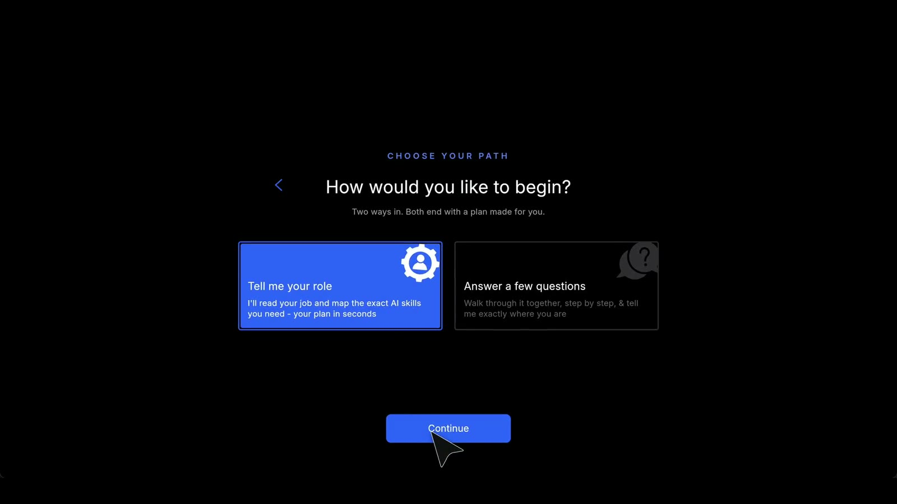

Ask how to begin, not who you are
Some people arrive knowing their job and nothing about AI. Others can't name the skills they want. One onboarding couldn't serve both.
I let people choose their own speed into the product. The cost was designing and maintaining two routes, and the risk was people worrying they had picked the wrong one. That's what the line under the question is for: Two ways in. Both end with a plan made for you.
Product thinking Paid for a faster start with a second route to design and maintain.
Content thinking The reassurance line does the work a tooltip would otherwise do.

Before, what I did, and what happened
Before
Add: What onboarding looked like before the first version of this flow, or the pattern you started from, such as one long questionnaire
Screenshot to addThe earlier onboarding, before the two ways in
What I did
- Two large choice cards, each with its own illustration, so the choice reads at a glance
- One line of reassurance under the question, so neither route feels like the wrong one
- The role route goes straight to the role list; the question route adds goal, skill map, time and pace
What happened
Add: What happened onboarding completion by route, or what people said in testing. If you have no number, describe what you observed.